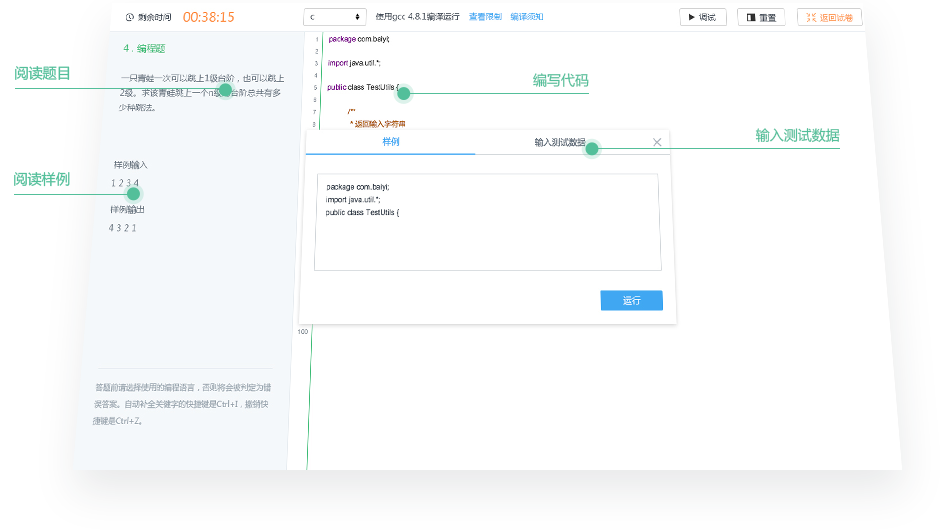
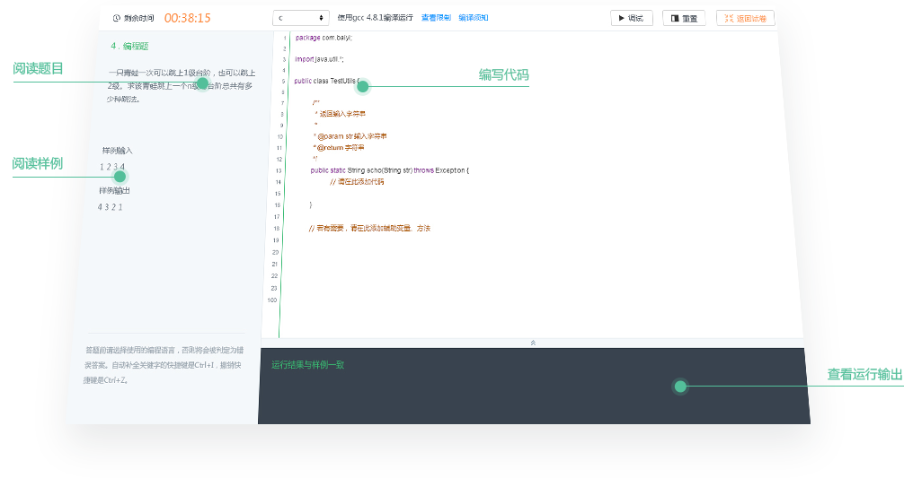

北森客服：400-650-6886
返回
- 摄像头
- 手机拍照上传
- 在线编程须知
- 网络检测
检测中...
您正在使用的浏览器需要调整摄像头,请点击浏览器右上角弹窗中的"允许"按钮.
部分题目可以在纸上答题后拍照上传，请按下面的步骤进行检测：
-
请先用手机拍摄需要上传的图片，拍摄时保持光线充足，切勿拍虚，画面中不得出现答题纸之外的物品
-
-
在手机打开的上传页面选择需上传的照片，点击下方的“上传”按钮，等待至提示“上传成功”
-
请确认预览是图片清晰可辨，如果图片过于模糊，将会导致作答效果无效
-
请勿作弊请在当前网页中答题，不允许在本地环境编程。 考试结束后系统将进行雷同检测，请勿抄袭。
-
开始编程系统根据你选择的语言来运行代码，请勿错选。 请认真阅读题目要求，严格按样例数据的格式输入和输出。
-
在线调试除了提交代码，你还自己输入测试数据，自己分析结果。系统不会告诉你正确还是错误。 即使运行成功也要认真检查，是否考虑到了每种情况，是否有多余或缺少的字符（注意空格和换行）。
语言说明
- C
- C++
- C#
- Java
- Python
- PHP
- JavaScript
说明
输入输出示例
使用gcc 4.9.4编译运行。禁止使用图形、文件、网络、系统相关的操作，如sys/stat.h，unistd.h，curl/curl.h，process.h等。
如何输入
请使用格式化输入函数(scanf( ))，也可以使用非格式化输入函数(如gets( )).
调试代码时你需要手动输入测试数据，请严格按照题目样例格式输入。 如何输出 请格式化输出函数(printf ( ))；也可以使用非格式化输出函数(如puts( ))。
调试代码时你需要手动输入测试数据，请严格按照题目样例格式输入。 如何输出 请格式化输出函数(printf ( ))；也可以使用非格式化输出函数(如puts( ))。
//输入一组数据并输出
int a,b;
scanf("％d %d”,&a,&b);
printf("%d %d\n”,a,b);
//输入多组数据并输出
int a[100],b[100],i;
while(scanf("%d %d",&a[i],&b[i])!=EOF)
{
printf("%d %d\n",a[i],b[i]);
i++;
}
使用g++ 4.9.4编译运行。禁止使用图形、文件、网络、系统相关的操作，如process.h，graphics.h，sys/stat.h，unistd.h，curl/curl.h等。
如何输入
请使用格式化输入函数(cin)。
调试代码时你需要手动输入测试数据，请严格按照题目样例格式输入。
如何输出
请使用格式化输出函数(cout)。
//输入一组数据并输出
int a, b;
cin>> a >> b;
cout << a << b << endl;
//输入多组数据并输出
int a, b;
while(cin>> a >> b)
cout << a << b << endl;
使用.NET 4编译运行。禁止使用图形、文件、网络、系统相关的操作，如ystem.Drawing，System.IO，System.ServiceProcess，System.Threading，System.Windows等。
如何输入
请使用系统输入函数(System.Console.ReadLine())。
调试代码时你需要手动输入测试数据，请严格按照题目样例格式输入。 如何输出 请使用系统输出函数(System.Console.WriteLine())。
调试代码时你需要手动输入测试数据，请严格按照题目样例格式输入。 如何输出 请使用系统输出函数(System.Console.WriteLine())。
//输入一组数据并输出
string str= Console.ReadLine()
Console.WriteLine(str);
//输入多组数据并输出
string str;
while((str=Console.ReadLine())!=null)
Console.WriteLine(str);
使用jdk 1.8编译运行。禁止使用图形、文件、网络、系统相关的操作，如java.lang.Process，javax.swing.JFrame，Runtime.getRuntime等。
如何输入
请使用标准输入函数(System.in)。
调试代码时你需要手动输入测试数据，请严格按照题目样例格式输入。 如何输出 请使用标准输出函数(System.out)。
调试代码时你需要手动输入测试数据，请严格按照题目样例格式输入。 如何输出 请使用标准输出函数(System.out)。
//输入一组数据并输出
Scanner sc = new Scanner(System.in);
String str=sc.nextLine();
System.out.printf("%s\n",str);
//输入多组数据并输出
Scanner sc = new Scanner(System.in);
String str;
while(sc.hasNextLine()){
str = sc.nextLine();
System.out.printf("%s\n",str);
}
使用python 2.7.10解释运行。禁止使用图形、文件、网络、系统相关的操作，如Process，httplib，os等。
如何输入
请使用系统输入函数(raw_input()，input())。
调试代码时你需要手动输入测试数据，请严格按照题目样例格式输入。 如何输出 请使用系统输出函数(print)。
调试代码时你需要手动输入测试数据，请严格按照题目样例格式输入。 如何输出 请使用系统输出函数(print)。
//输入一组数据并输出
str=raw_input()
print str
//输入多组数据并输出
import sys
for line in sys.stdin:
for value in line.split():
print(value)
使用PHP 5.3.3解释运行。禁止使用图形、文件、网络、系统相关的操作，如Fileinfo，Filesystem，POSIX等
如何输入
请使用系统输入函数(fgets())。
调试代码时你需要手动输入测试数据，请严格按照题目样例格式输入。 如何输出 请使用系统输出函数(echo，print()，print_r())。
调试代码时你需要手动输入测试数据，请严格按照题目样例格式输入。 如何输出 请使用系统输出函数(echo，print()，print_r())。
//输入一组数据并输出
$str=fgets(STDIN,1000);
echo $str;
//输入多组数据并输出
$s = fgets(STDIN,1000);
while ($s != "") {
print ($s);
$s = fgets(STDIN,1000);
}
使用Google V8 Engine解释运行。禁止使用图形、文件、网络、系统相关的操作。请勿修改主函数名main()。
如何输入
调试代码时你需要手动输入测试数据，请严格按照题目样例格式输入。
输入数据时，字符串数据前后需加英文引号。输入多个数据时请用英文逗号隔开，并且与main()中参数个数相同。
如何输出
请使用console.log()输出。
//输入一组数据并输出
function main(a1,a2,a3,a4,a5,a6){
console.log(a1,a2,a3,a4,a5,a6);
}
使用Google V8 Engine解释运行。禁止使用图形、文件、网络、系统相关的操作。请勿修改主函数名main()。
如何输入
调试代码时你需要手动输入测试数据，请严格按照题目样例格式输入。
输入数据时，字符串数据前后需加英文引号。输入多个数据时请用英文逗号隔开，并且与main()中参数个数相同。
如何输出
请使用console.log()输出。
//输入一组数据并输出
function main(a1,a2,a3,a4,a5,a6){
console.log(a1,a2,a3,a4,a5,a6);
}
答题界面


北森客服：400-650-6886
© 2002-2013北森 人才管理软件及解决方案 京ICP备05051632号
京公网安备11010802020454号